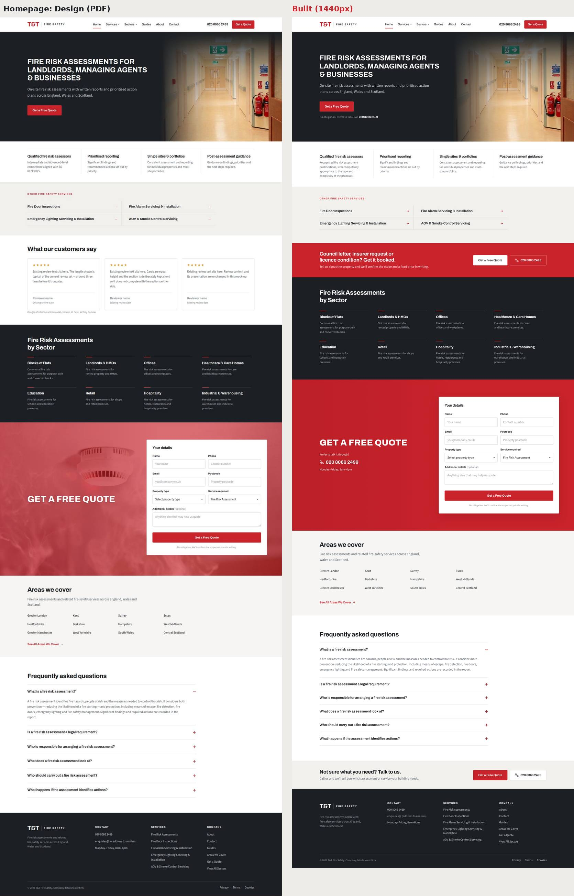
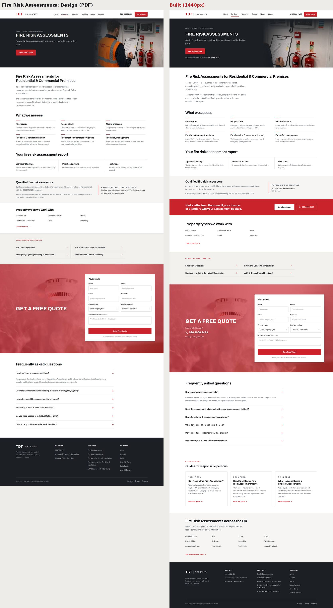
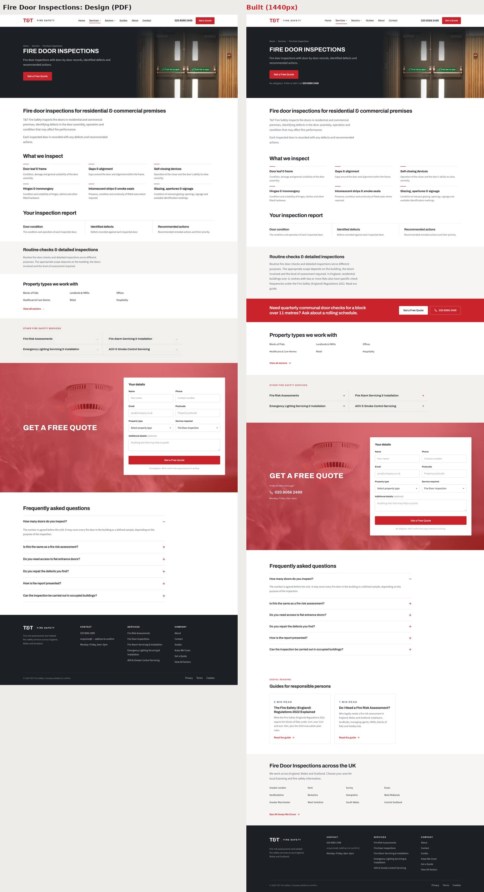
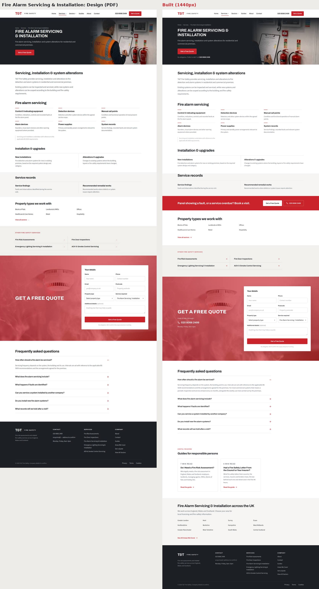
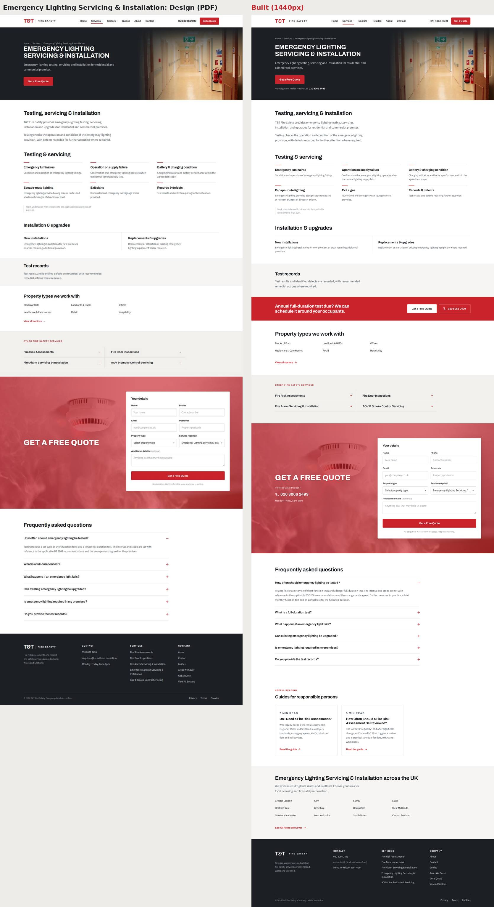
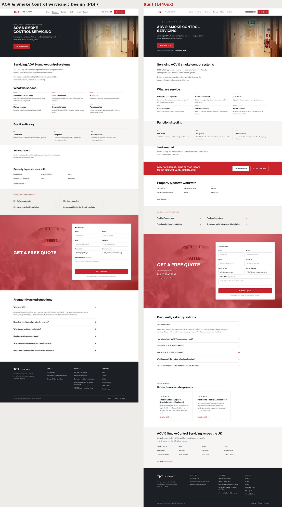
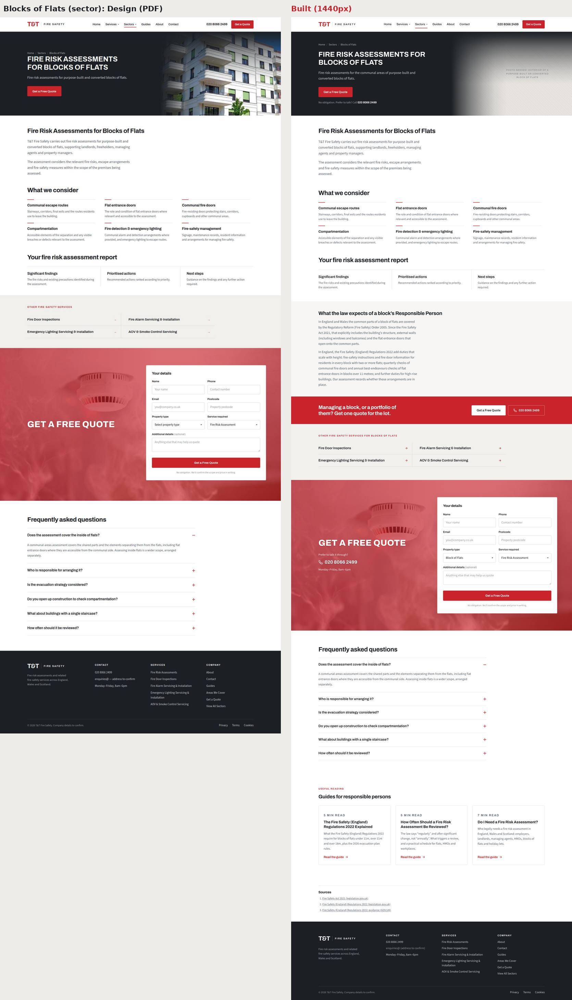
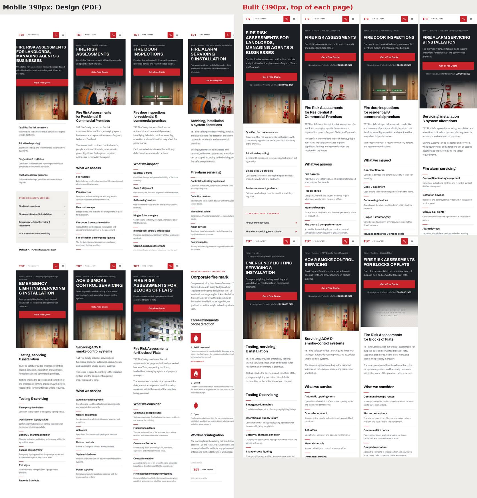

<title>T&amp;T Fire Safety Build Review</title>
<meta name="claude:viewport-fit-sides" content="cover">
<link rel="stylesheet" href="https://fonts.googleapis.com/css2?family=Archivo:wght@600;700;800&family=Source+Sans+3:wght@400;600&display=swap">
<style>
/* Layout: one reading column; comparison images in scroll frames; uses the client's own design tokens */
:root{
  --bg:#FFFFFF; --band:#F6F5F3; --fg:#1C2024; --muted:#5B646C; --line:#E4E1DC;
  --red:#C9232C; --ok:#1F7A4D; --warn:#A8631A; --frame:#EEECE8;
  --head:'Archivo',system-ui,-apple-system,'Segoe UI',sans-serif;
  --body:'Source Sans 3',system-ui,-apple-system,'Segoe UI',sans-serif;
}
@media (prefers-color-scheme: dark){:root:not([data-theme="light"]){--bg:#16191D;--band:#1E2226;--fg:#ECEAE7;--muted:#A6ADB3;--line:#2E3338;--red:#E8504A;--ok:#4CC08A;--warn:#E3A55A;--frame:#22262B;color-scheme:dark}}
:root[data-theme="dark"]{--bg:#16191D;--band:#1E2226;--fg:#ECEAE7;--muted:#A6ADB3;--line:#2E3338;--red:#E8504A;--ok:#4CC08A;--warn:#E3A55A;--frame:#22262B;color-scheme:dark}
body{background:var(--bg);color:var(--fg);font-family:var(--body);font-size:17px;line-height:1.6}
.wrap{max-width:1120px;margin:0 auto;padding-left:max(16px,env(safe-area-inset-left,0px));padding-right:max(16px,env(safe-area-inset-right,0px))}
header.top{border-bottom:1px solid var(--line)}
header.top .wrap{padding-block:40px 32px;display:grid;gap:14px}
.mark{font-family:var(--head);font-weight:700;letter-spacing:-.04em;color:var(--red);font-size:22px}
.mark span{color:var(--fg);font-size:12px;letter-spacing:.2em;font-weight:600;margin-left:10px}
h1,h2,h3{font-family:var(--head);text-wrap:balance;letter-spacing:-.015em;margin:0}
h1{font-size:clamp(28px,4vw,40px);line-height:1.12}
h2{font-size:26px;line-height:1.2}
h3{font-size:18px}
.lede{color:var(--muted);max-width:64ch;margin:0}
.eyebrow{font-family:var(--head);font-size:12px;font-weight:600;letter-spacing:.15em;text-transform:uppercase;color:var(--red);margin:0}
section{padding-block:44px;border-bottom:1px solid var(--line)}
section.band{background:var(--band)}
section > .wrap{display:grid;gap:18px}
.facts{display:grid;grid-template-columns:repeat(auto-fit,minmax(180px,1fr));gap:12px;margin-top:6px}
.fact{border-top:2px solid var(--red);padding-top:10px}
.fact b{display:block;font-family:var(--head);font-size:24px;font-variant-numeric:tabular-nums}
.fact span{color:var(--muted);font-size:15px}
.status{display:inline-flex;align-items:center;gap:6px;font-family:var(--head);font-size:12px;font-weight:600;letter-spacing:.08em;text-transform:uppercase;padding:3px 8px;border-radius:3px;border:1px solid currentColor}
.status.ok{color:var(--ok)} .status.warn{color:var(--warn)} .status.no{color:var(--red)}
.cmp{display:grid;gap:10px}
.cmp-head{display:flex;flex-wrap:wrap;gap:8px 16px;align-items:baseline;justify-content:space-between}
.frame{background:var(--frame);border:1px solid var(--line);border-radius:4px;max-height:780px;overflow:auto}
.frame img{display:block;width:100%;min-width:640px;height:auto}
ul.dev{margin:0;padding-left:20px;display:grid;gap:6px;color:var(--muted);max-width:80ch}
ul.dev b{color:var(--fg);font-weight:600}
.tablewrap{overflow-x:auto}
table{border-collapse:collapse;width:100%;font-size:15.5px;min-width:520px}
th,td{text-align:left;padding:9px 12px 9px 0;border-bottom:1px solid var(--line);vertical-align:top}
th{font-family:var(--head);font-size:13px;letter-spacing:.04em;color:var(--muted);font-weight:600}
td.num{font-variant-numeric:tabular-nums;font-family:var(--head);font-weight:600}
ol.q{margin:0;padding-left:22px;display:grid;gap:8px;max-width:80ch}
ol.q b{font-weight:600}
code{font-size:.9em;background:var(--band);padding:1px 5px;border-radius:3px}
nav.toc{display:flex;flex-wrap:wrap;gap:8px 18px;font-family:var(--head);font-size:14px;font-weight:600}
nav.toc a{color:var(--fg);text-decoration:none;border-bottom:1px solid var(--line)}
nav.toc a:hover,nav.toc a:focus-visible{color:var(--red);border-color:var(--red);outline:none}
footer{padding-block:28px;color:var(--muted);font-size:14px}
</style>

<header class="top"><div class="wrap">
  <div class="mark">T&amp;T<span>FIRE SAFETY</span></div>
  <p class="eyebrow">Build review · 19 October 2026</p>
  <h1>Website build checked against Philip’s design</h1>
  <p class="lede">Each designed page sits beside the built page at 1440px, with every deviation and the reason for it. Below that: functional tests, Lighthouse scores, the two blockers, and the questions only Philip can answer.</p>
  <div class="facts">
    <div class="fact"><b>43</b><span>pages built</span></div>
    <div class="fact"><b>26 / 26</b><span>functional checks pass</span></div>
    <div class="fact"><b>99–100</b><span>Lighthouse mobile performance</span></div>
    <div class="fact"><b>0</b><span>fake reviews or unconfirmed credentials shown</span></div>
  </div>
  <nav class="toc" aria-label="Sections"><a href="#compare">Side by side</a><a href="#tests">Tests</a><a href="#speed">Lighthouse</a><a href="#blockers">Blockers</a><a href="#questions">Questions for Philip</a></nav>
</div></header>

<section id="compare"><div class="wrap">
  <p class="eyebrow">Design vs build</p>
  <h2>Side by side</h2>
  <p class="lede">The PDF is on the left and the build on the right. Scroll inside each frame. Changes that apply to every page are listed once, here:</p>
  <ul class="dev">
    <li><b>Sticky header</b>: shrinks on scroll; phone and Get a Quote always visible.</li>
    <li><b>Mobile Call / Get a Quote bar</b>: hides while the form is on screen.</li>
    <li><b>Red CTA band after every 2–3 sections</b>, using the design artifact’s own band pattern.</li>
    <li><b>“No obligation. Prefer to talk? Call…” line</b> under each hero button.</li>
    <li><b>Phone number and hours</b> in the quote section’s empty left column.</li>
    <li><b>Cookie consent banner</b>: Consent Mode, needed in the UK before analytics cookies are set.</li>
    <li><b>Self-hosted fonts</b>: the same Archivo and Source Sans 3 faces, loaded locally.</li>
    <li><b>Placeholder email</b>: still shows “address to confirm”.</li>
  </ul>

  <div class="cmp"><div class="cmp-head"><h3>Homepage</h3><span class="status warn">2 trust changes</span></div>
    <ul class="dev"><li><b>Trust strip</b>: “aligned with BS 8674:2025” replaced with neutral wording, because that claim is unconfirmed.</li><li><b>Reviews section</b>: hidden until real reviews exist; the component is built.</li><li><b>Sector heading and FAQ</b>: as designed. A light CTA band follows the FAQ.</li></ul>
    <div class="frame"></div></div>

  <div class="cmp"><div class="cmp-head"><h3>Fire Risk Assessments</h3><span class="status warn">credentials trimmed</span></div>
    <ul class="dev"><li><b>FireQual Level 5, IFE Registered and BS 8674</b> removed. The band shows only the confirmed FPA Level 3 (Philip Roberts).</li><li><b>Hero photo</b> cropped to remove the T&amp;T-branded hi-vis vest.</li><li><b>Guides and areas</b> added after the FAQ, for internal linking.</li></ul>
    <div class="frame"></div></div>

  <div class="cmp"><div class="cmp-head"><h3>Fire Door Inspections</h3><span class="status ok">matches</span></div>
    <ul class="dev"><li><b>“Routine checks” band</b> gains one sentence linking to the 2022 Regulations guide.</li></ul>
    <div class="frame"></div></div>

  <div class="cmp"><div class="cmp-head"><h3>Fire Alarm Servicing &amp; Installation</h3><span class="status ok">matches</span></div>
    <ul class="dev"><li><b>FAQ answers 2–6</b> written by us (the PDF shows only the first). Standards are referenced as “with reference to BS 5839”.</li><li><b>Hero photo</b> uses the same vest-free crop.</li></ul>
    <div class="frame"></div></div>

  <div class="cmp"><div class="cmp-head"><h3>Emergency Lighting</h3><span class="status ok">matches</span></div>
    <ul class="dev"><li><b>FAQ answers 2–6</b> written by us, referencing BS 5266.</li></ul>
    <div class="frame"></div></div>

  <div class="cmp"><div class="cmp-head"><h3>AOV &amp; Smoke Control</h3><span class="status ok">matches</span></div>
    <ul class="dev"><li><b>FAQ answers 2–6</b> written by us.</li></ul>
    <div class="frame"></div></div>

  <div class="cmp"><div class="cmp-head"><h3>Blocks of Flats (sector)</h3><span class="status no">photo removed</span></div>
    <ul class="dev"><li><b>Hero photo</b> carried a Dreamstime watermark (an unlicensed comp), so it is now a labelled “photo needed” panel.</li><li><b>“What the law expects” band</b> added (Fire Safety Act 2021, 2022 Regulations), plus a CTA band and cited sources.</li><li><b>The other 7 sectors</b> are built on this template with their own content.</li></ul>
    <div class="frame"></div></div>

  <div class="cmp"><div class="cmp-head"><h3>Mobile, 390px</h3><span class="status ok">matches</span></div>
    <ul class="dev"><li><b>Header, stacked hero, full-width button and single-column grids</b> all as designed.</li><li><b>Fixed Call / Get a Quote bar</b> is hidden in these full-page captures.</li></ul>
    <div class="frame"></div></div>
</div></section>

<section class="band" id="tests"><div class="wrap">
  <p class="eyebrow">Playwright, against the production build</p>
  <h2>Functional tests</h2>
  <div class="tablewrap"><table>
    <thead><tr><th>Check</th><th>Result</th></tr></thead>
    <tbody>
      <tr><td>All 44 URLs: one H1, title, description, canonical, valid schema</td><td><span class="status ok">pass</span></td></tr>
      <tr><td>Every phone link is <code>tel:+442080662499</code>; a click pushes <code>phone_click</code> with its location</td><td><span class="status ok">pass</span></td></tr>
      <tr><td>Quote form: inline errors, service pre-selected per page, <code>generate_lead</code> pushed, redirect to /thank-you</td><td><span class="status ok">pass</span></td></tr>
      <tr><td>Form works with JavaScript off (POST, then thank-you)</td><td><span class="status ok">pass</span></td></tr>
      <tr><td>FAQ accordions open and close; hero CTA scrolls to the form</td><td><span class="status ok">pass</span></td></tr>
      <tr><td>Mobile: phone icon, menu, bottom bar, sticky header, no sideways scroll on any page</td><td><span class="status ok">pass</span></td></tr>
      <tr><td>All internal links resolve; no review cards; no FireQual / IFE / BS 8674 claims</td><td><span class="status ok">pass</span></td></tr>
      <tr><td>Real email delivery to Philip</td><td><span class="status warn">needs keys</span></td></tr>
    </tbody>
  </table></div>
</div></section>

<section id="speed"><div class="wrap">
  <p class="eyebrow">Lighthouse, mobile</p>
  <h2>Speed and SEO</h2>
  <p class="lede">SEO scores 100 with indexing switched on. Preview builds carry <code>noindex</code> on purpose, so they score 69 until launch.</p>
  <div class="tablewrap"><table>
    <thead><tr><th>Page</th><th>Perf</th><th>A11y</th><th>Best pr.</th><th>SEO</th><th>LCP</th></tr></thead>
    <tbody>
      <tr><td>Home</td><td class="num">100</td><td class="num">100</td><td class="num">100</td><td class="num">100</td><td class="num">1.8s</td></tr>
      <tr><td>Fire Risk Assessments</td><td class="num">99</td><td class="num">100</td><td class="num">100</td><td class="num">100</td><td class="num">2.1s</td></tr>
      <tr><td>Blocks of Flats</td><td class="num">100</td><td class="num">100</td><td class="num">100</td><td class="num">100</td><td class="num">1.5s</td></tr>
      <tr><td>Area: Kent</td><td class="num">99</td><td class="num">100</td><td class="num">100</td><td class="num">100</td><td class="num">1.7s</td></tr>
      <tr><td>Guide: FRA cost</td><td class="num">99</td><td class="num">100</td><td class="num">100</td><td class="num">100</td><td class="num">1.7s</td></tr>
      <tr><td>Quote</td><td class="num">99</td><td class="num">100</td><td class="num">100</td><td class="num">100</td><td class="num">1.8s</td></tr>
    </tbody>
  </table></div>
</div></section>

<section class="band" id="blockers"><div class="wrap">
  <p class="eyebrow">Needs action</p>
  <h2>Deployment status</h2>
  <ol class="q">
    <li><b>Vercel preview not deployed.</b> The Vercel connector refused to create a project in Gal’s team (403). Import the GitHub repo in Vercel, set the production branch to an unused name, and the feature branch deploys as a preview. No domain has been touched.</li>
    <li><b>Pull request open</b> against <code>main</code>: <a href="https://github.com/galshlomai-gsh/Master-fire-safety/pull/1">galshlomai-gsh/Master-fire-safety#1</a>. Central Scotland has since been removed (11 regions).</li>
  </ol>
</div></section>

<section id="questions"><div class="wrap">
  <p class="eyebrow">For Philip</p>
  <h2>Questions before launch</h2>
  <ol class="q">
    <li><b>Brand:</b> T&amp;T standalone, or built around Certify Services? Which company name and number go in the footer? Approve fire mark A?</li>
    <li><b>Credentials:</b> who holds FireQual Level 5 or IFE registration, and can we claim BS 8674 alignment? Any company schemes (BAFE, FIA)? Insurance cover?</li>
    <li><b>Photos:</b> 10–15 real job photos (no branded clothing needed). Licences for the corridor, door and detector images?</li>
    <li><b>Email:</b> the enquiries address to show, and the inbox that should receive quote requests.</li>
    <li><b>Areas:</b> which of the 12 regions you can cover today; which London boroughs to prioritise.</li>
    <li><b>Reviews:</b> is there a Google Business Profile? If not, set one up and request a review after every job.</li>
    <li><b>Offer:</b> a report turnaround and any “from £X” prices you’re happy to advertise.</li>
  </ol>
</div></section>

<footer><div class="wrap">Branch <code>claude/tt-fire-safety-website-123ei3</code>. Full detail is in QA-REPORT.md and QUESTIONS-FOR-PHILIP.md in the repository.</div></footer>
